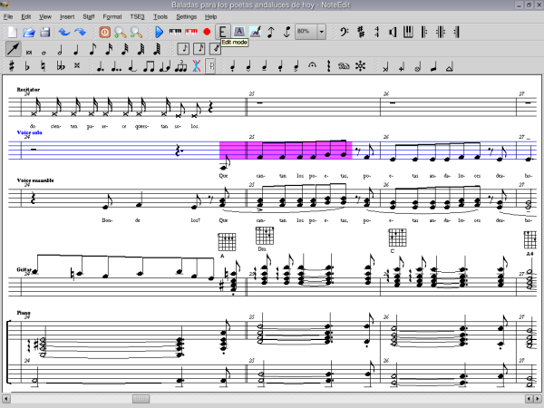

NoteEdit is a free music score editor for Linux. It supports an unlimited number and length of staffs, polyphony, a MIDI playback of written notes, chord markings, lyrics, a number of import and export filters to many formats like MIDI, MusicXML, ABC Music, MUP, PMX, MusiXTeX and LilyPond and more!
Heads up!
After a year of development, new 2.8.1 release is in preparation. Grab the latest beta and send us bug reports! If there are any translators interested, translations updates are welcome too. release notes download section
The latest stable version of NoteEdit is 2.8.0. You can download it by visiting our download section.

For detailed information about the project, please visit our project page at Berlios!
We want to thank Berlios for hosting the NoteEdit project!